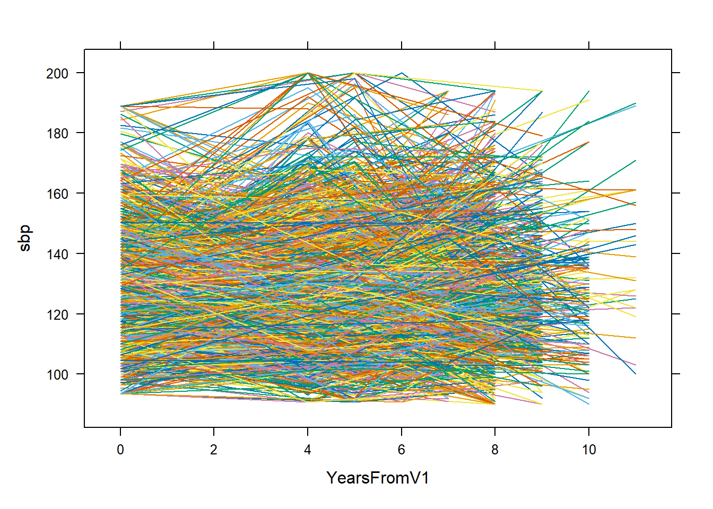
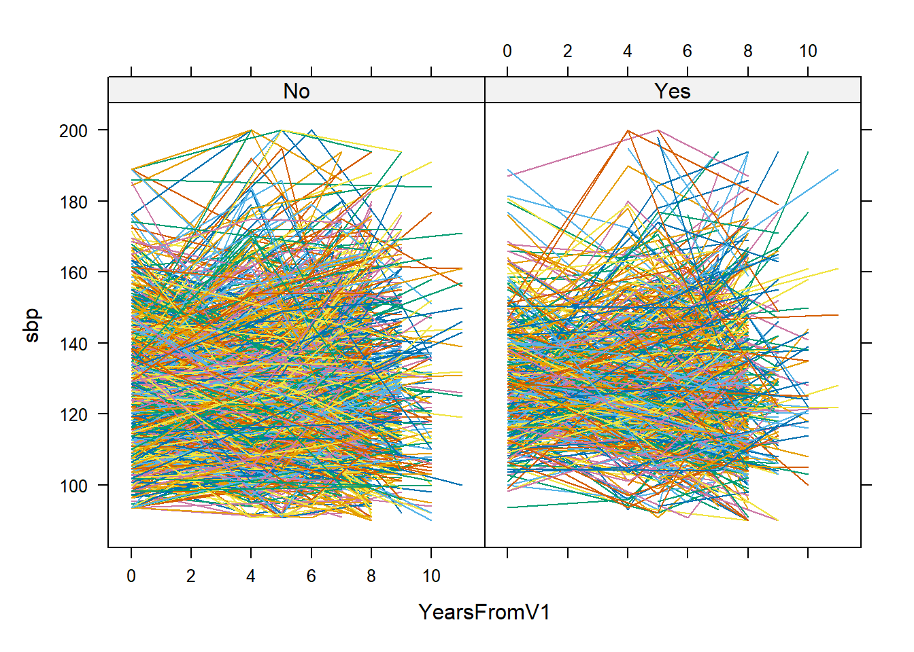
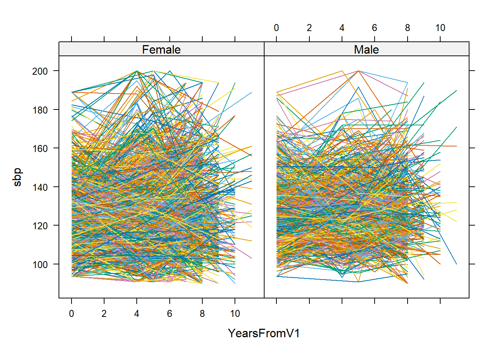
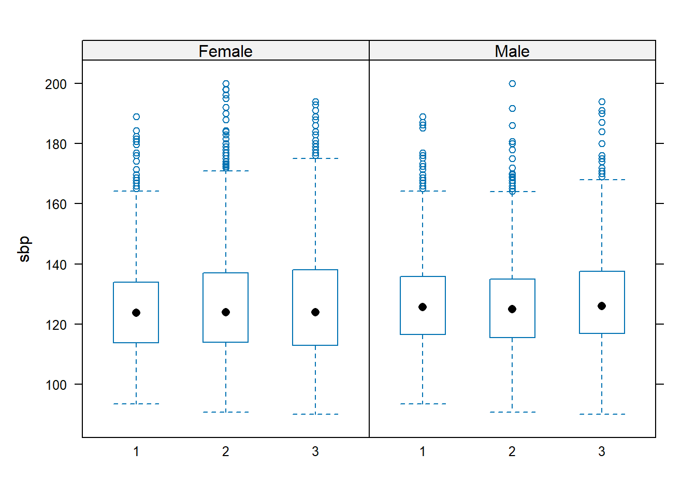
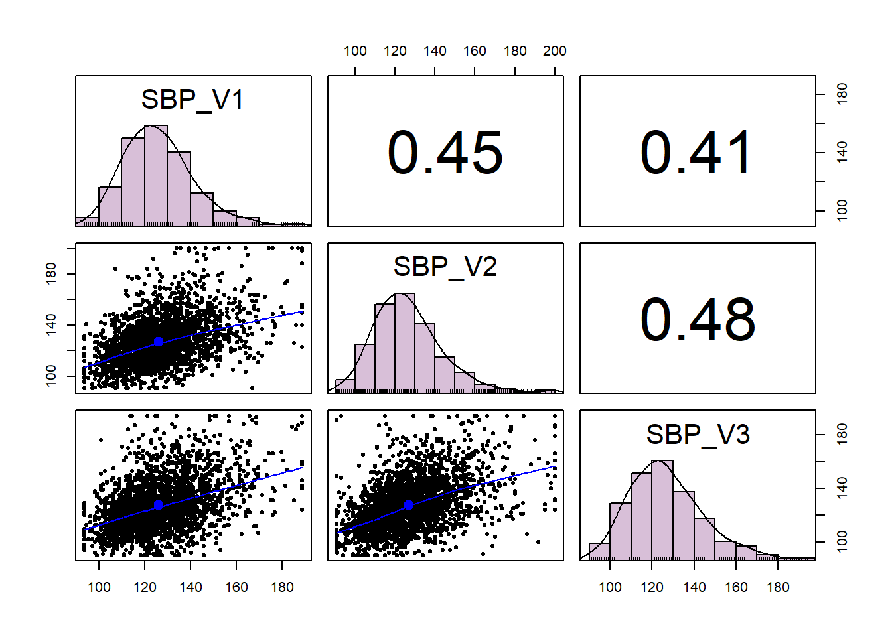
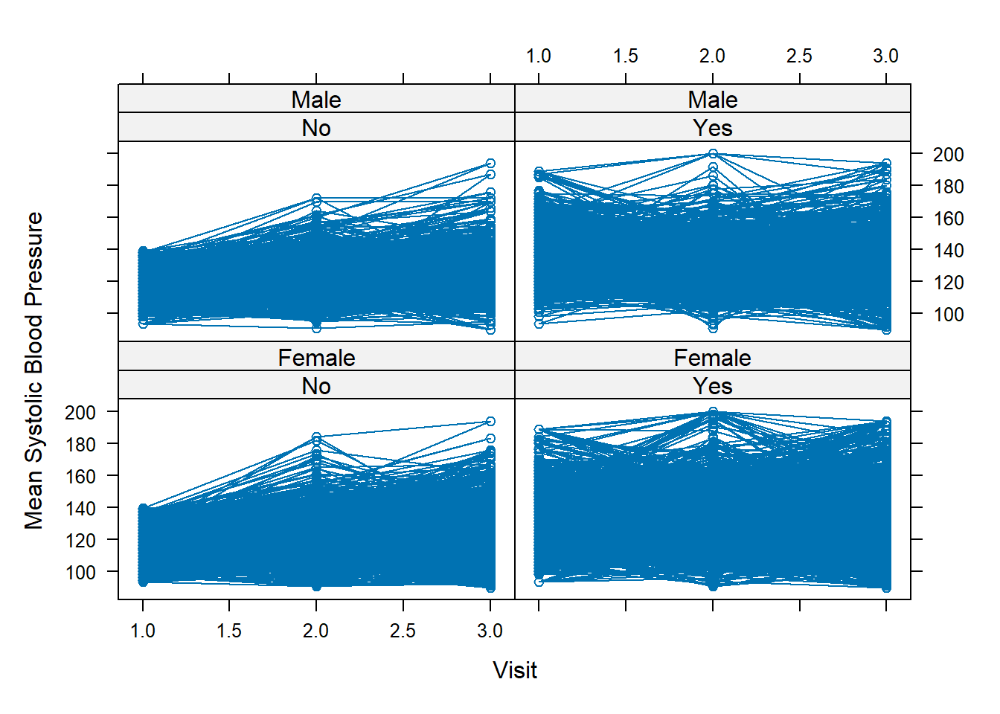
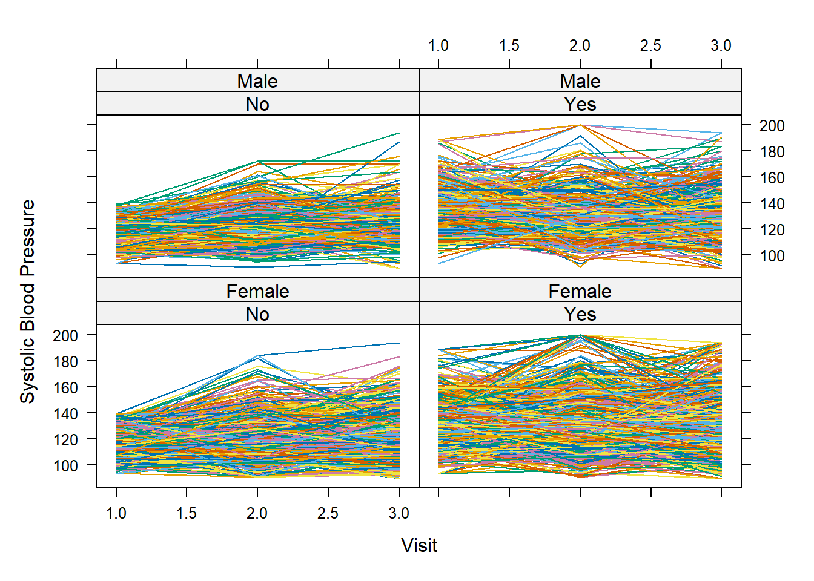

library(tidyverse)
library(readr)
library(lattice)
library(knitr)
library(dplyr)
library(psych)
library(nlme)Applied Linear Mixed-Effects Models
Does systolic blood pressure change over time and does sex affect that roc
Chapters 2 and 3
#fixing diab3cat
#diab3cat 0 non, 1 pre, 2 diabetic
diab_levels <- c(
"Non-Diabetic",
"Pre-Diabetic",
"Diabetic"
)
analysis1$diab3cat <- factor(
analysis1$diab3cat,
levels = diab_levels
)
analysis2$diab3cat <- factor(
analysis2$diab3cat,
levels = 0:2,
labels = diab_levels
)
analysis3$diab3cat <- factor(
analysis3$diab3cat,
levels = 0:2,
labels = diab_levels
)
unique(analysis1$diab3cat)[1] Pre-Diabetic Diabetic Non-Diabetic <NA>
Levels: Non-Diabetic Pre-Diabetic Diabeticunique(analysis2$diab3cat)[1] Pre-Diabetic Diabetic Non-Diabetic <NA>
Levels: Non-Diabetic Pre-Diabetic Diabeticunique(analysis3$diab3cat)[1] Pre-Diabetic Diabetic Non-Diabetic <NA>
Levels: Non-Diabetic Pre-Diabetic Diabetic#fixing DialysisEver
names(analysis2)[names(analysis2) == "dialysisEver"] <- "DialysisEver"
analysis1$DialysisEver <- factor(
analysis1$DialysisEver,
levels = c("No", "Yes")
)
analysis2$DialysisEver <- factor(
analysis2$DialysisEver,
levels = c(0, 1),
labels = c("No", "Yes")
)
analysis3$DialysisEver <- factor(
analysis3$DialysisEver,
levels = c(0, 1),
labels = c("No", "Yes")
)
unique(analysis1$DialysisEver)[1] No <NA> Yes
Levels: No Yesunique(analysis2$DialysisEver)[1] <NA>
Levels: No Yesunique(analysis3$DialysisEver)[1] No Yes
Levels: No Yeslongway <- bind_rows(analysis1, analysis2, analysis3)
head(longway)# A tibble: 6 × 209
subjid visit VisitDate DaysFromV1 YearsFromV1 ARIC recruit ageIneligible
<dbl> <dbl> <chr> <dbl> <dbl> <chr> <chr> <chr>
1 2054 1 06/30/2003 0 0 JHS-Only Random No
2 2013 1 09/30/2003 0 0 JHS-Only Random No
3 455 1 01/03/2004 0 0 JHS-Only Volunte… No
4 5 1 10/27/2003 0 0 JHS-Only Random No
5 2408 1 11/28/2003 0 0 JHS-Only Random No
6 248 1 09/18/2003 0 0 JHS-Only Random No
# ℹ 201 more variables: FastHours <dbl>, age <dbl>, brthyr <dbl>, brthmo <dbl>,
# sex <chr>, male <chr>, menopause <chr>, alc <chr>, alcw <dbl>,
# currentSmoker <chr>, everSmoker <chr>, weight <dbl>, height <dbl>,
# waist <dbl>, neck <dbl>, BMI <dbl>, hip <dbl>, bsa <dbl>, BPmeds <chr>,
# DMmedsOral <chr>, DMmedsIns <chr>, DMmeds <chr>, statinMeds <chr>,
# hrtMeds <chr>, betaBlkMeds <chr>, calBlkMeds <chr>, diureticMeds <chr>,
# antiArythMeds <chr>, medAcct <chr>, BPmedsSelf <chr>, DMMedType <chr>, …#checking longway
longway %>%
group_by(subjid) %>%
summarise(
n_visits = n_distinct(visit),
.groups = "drop"
) %>%
count(n_visits)# A tibble: 1 × 2
n_visits n
<int> <int>
1 3 2653longway %>%
count(subjid, visit) %>%
filter(n > 1)# A tibble: 0 × 3
# ℹ 3 variables: subjid <dbl>, visit <dbl>, n <int>longway %>%
select(subjid, visit, VisitDate, DaysFromV1, YearsFromV1) %>%
arrange(subjid, visit) %>%
head(20)# A tibble: 20 × 5
subjid visit VisitDate DaysFromV1 YearsFromV1
<dbl> <dbl> <chr> <dbl> <dbl>
1 1 1 07/20/2001 0 0
2 1 2 03/17/2006 1701 5
3 1 3 06/08/2009 2880 8
4 2 1 05/07/2002 0 0
5 2 2 09/13/2006 1590 4
6 2 3 01/10/2010 2805 8
7 3 1 05/13/2001 0 0
8 3 2 03/11/2006 1763 5
9 3 3 11/22/2009 3115 9
10 4 1 01/15/2002 0 0
11 4 2 03/14/2006 1519 4
12 4 3 06/17/2009 2710 7
13 5 1 10/27/2003 0 0
14 5 2 03/04/2008 1590 4
15 5 3 11/23/2010 2584 7
16 6 1 06/02/2002 0 0
17 6 2 10/14/2006 1595 4
18 6 3 10/16/2009 2693 7
19 7 1 09/02/2003 0 0
20 7 2 02/03/2008 1615 4barkbark <- unique(c(names(analysis1), names(analysis2),names(analysis3)))
barkmeow <- data.frame(variable = barkbark,
analysis1 = barkbark %in% names(analysis1),
analysis2 = barkbark %in% names(analysis2),
analysis3 = barkbark %in% names(analysis3)
)
kable(head(barkmeow))| variable | analysis1 | analysis2 | analysis3 |
|---|---|---|---|
| subjid | TRUE | TRUE | TRUE |
| visit | TRUE | TRUE | TRUE |
| VisitDate | TRUE | TRUE | TRUE |
| DaysFromV1 | TRUE | TRUE | TRUE |
| YearsFromV1 | TRUE | TRUE | TRUE |
| ARIC | TRUE | TRUE | TRUE |
#in all 3
commons <- Reduce(intersect, list(names(analysis1), names(analysis2), names(analysis3)))
kable(commons)| x |
|---|
| subjid |
| visit |
| VisitDate |
| DaysFromV1 |
| YearsFromV1 |
| ARIC |
| recruit |
| ageIneligible |
| FastHours |
| age |
| brthyr |
| brthmo |
| sex |
| male |
| menopause |
| alc |
| alcw |
| currentSmoker |
| everSmoker |
| weight |
| height |
| waist |
| neck |
| BMI |
| hip |
| bsa |
| BPmeds |
| DMmedsOral |
| DMmedsIns |
| DMmeds |
| statinMeds |
| hrtMeds |
| betaBlkMeds |
| calBlkMeds |
| diureticMeds |
| antiArythMeds |
| medAcct |
| BPmedsSelf |
| DMMedType |
| dmMedsSelf |
| statinMedsSelf |
| hrtMedsSelfEver |
| hrtMedsSelf |
| antiArythMedsSelf |
| sbp |
| dbp |
| BPjnc7 |
| HTN |
| abi |
| HbA1c |
| FPG |
| FPG3cat |
| HbA1c3cat |
| HbA1cIFCC |
| HbA1cIFCC3cat |
| fastingInsulin |
| Diabetes |
| diab3cat |
| HOMA_B |
| HOMA_IR |
| ldl |
| hdl |
| trigs |
| totchol |
| ldl5cat |
| hdl3cat |
| trigs4cat |
| eSelectin |
| pSelectin |
| sCort |
| reninRIA |
| reninIRMA |
| adiponectin |
| CreatinineU24hr |
| AlbuminU24hr |
| CreatinineUSpot |
| AlbuminUSpot |
| SCrCC |
| SCrIDMS |
| eGFRmdrd |
| eGFRckdepi |
| DialysisEver |
| DialysisDuration |
| CKDHx |
| speechLossEver |
| visionLossEver |
| doubleVisionEver |
| numbnessEver |
| paralysisEver |
| dizzynessEver |
| strokeHx |
| MIHx |
| CardiacProcHx |
| CHDHx |
| CarotidAngioHx |
| CVDHx |
| PA3cat |
| nutrition3cat |
| SMK3cat |
| idealHealthSMK |
| BMI3cat |
| idealHealthBMI |
| idealHealthPA |
| idealHealthNutrition |
| totChol3cat |
| idealHealthChol |
| BP3cat |
| idealHealthBP |
| glucose3cat |
| idealHealthDM |
#only in 1
kable(setdiff(names(analysis1), union(names(analysis2), names(analysis3))))| x |
|---|
| LEPTIN |
| HSCRP |
| ENDOTHELIN |
| ALDOSTERONE |
| maneuvers |
| asthma |
| FVC |
| FEV1 |
| FEV6 |
| FEV1PP |
| FVCPP |
| EF |
| DiastLVdia |
| SystLVdia |
| LVMecho |
| LVMindex |
| LVH |
| EF3cat |
| FS |
| RWT |
| MIAntLat |
| PrivateIns |
| MedicaidIns |
| MedicareIns |
| VAIns |
| InsuranceType |
| Insured |
| PublicIns |
| PublicInsType |
| PrivatePublicIns |
| lifetimeDiscrm |
| discrmBurden |
| depression |
| perceivedStress |
| weeklyStress |
| edu3cat |
| HSgrad |
| vitaminD2 |
| vitaminD3 |
| vitaminD3epimer |
| darkgrnVeg |
| eggs |
| fish |
| sportIndex |
| hyIndex |
| activeIndex |
#only in 2
kable(setdiff(names(analysis2), union(names(analysis1), names(analysis3))))| x |
|---|
| CAC |
| AAC |
| VAT50mm |
| SAT50mm |
| anyCAC |
| anyAAC |
#only in 3
kable(setdiff(names(analysis3), union(names(analysis1), names(analysis2))))| x |
|---|
| MIantlat |
#structure subj id -> a1 a2 a3longway_com <- longway[, commons]
longway_com <- arrange(longway_com, subjid)#R3.1 p 40
xy1 <-xyplot(sbp ~ YearsFromV1,
groups = subjid,
data = longway_com,
type = "l",
lty = 1)
xy1
xy2 <-xyplot(sbp ~ YearsFromV1 | Diabetes,
groups = subjid,
data = longway_com,
type = "l",
lty = 1)
xy2
xy3 <-xyplot(sbp ~ YearsFromV1 | sex,
groups = subjid,
data = longway_com,
type = "l",
lty = 1)
xy3
#R3.2
#checking visit patterns
visit_pattern <- longway_com %>%
group_by(subjid) %>%
summarise(visits = paste(sort(unique(visit)), collapse = "-"), .groups = "drop")
table(visit_pattern$visits)
1-2-3
2653 All 2653 subjects appeared at all 3 visits.
#checking diabetes patterns
diabetes_pattern <- longway_com %>%
arrange(subjid, visit) %>%
group_by(subjid) %>%
summarise(diabetes_pattern = paste(ifelse(is.na(Diabetes), "Missing", as.character(Diabetes)), collapse = "-"), .groups = "drop")
diabetes_pattern %>% count(diabetes_pattern) %>% arrange(desc(n)) %>% kable()| diabetes_pattern | n |
|---|---|
| No-No-No | 1333 |
| Yes-Yes-Yes | 459 |
| No-Missing-No | 395 |
| No-Yes-Yes | 171 |
| No-No-Yes | 112 |
| No-Missing-Yes | 63 |
| No-Yes-No | 39 |
| Yes-Missing-Yes | 18 |
| Yes-No-Yes | 10 |
| Yes-Yes-No | 8 |
| Yes-Missing-No | 7 |
| Missing-No-No | 6 |
| Yes-No-No | 6 |
| Missing-Missing-No | 5 |
| No-No-Missing | 5 |
| Missing-Missing-Missing | 3 |
| No-Missing-Missing | 3 |
| Missing-No-Yes | 2 |
| Missing-Yes-Yes | 2 |
| No-Yes-Missing | 2 |
| Missing-Missing-Yes | 1 |
| Missing-No-Missing | 1 |
| Missing-Yes-No | 1 |
| Yes-No-Missing | 1 |
The second visit appears to have the most missing recordings of diabetes status.
#check sex
table(longway_com$sex, useNA = "ifany")
Female Male
5019 2940 table(longway_com$visit, longway_com$sex, useNA = "ifany")
Female Male
1 1673 980
2 1673 980
3 1673 980No changes in sex.
#R3.3 p42
#summary stats
sbp_summary <- longway_com %>%
group_by(YearsFromV1, sex) %>%
summarise(n = sum(!is.na(sbp)),
mean_sbp = mean(sbp, na.rm = TRUE),
sd_sbp = sd(sbp, na.rm = TRUE),
median_sbp = median(sbp, na.rm = TRUE),
.groups = "drop")
kable(sbp_summary)| YearsFromV1 | sex | n | mean_sbp | sd_sbp | median_sbp |
|---|---|---|---|---|---|
| 0 | Female | 1672 | 125.2695 | 15.47267 | 123.83 |
| 0 | Male | 977 | 127.5444 | 15.67067 | 125.66 |
| 4 | Female | 763 | 126.8369 | 19.12146 | 123.00 |
| 4 | Male | 452 | 126.3473 | 15.68049 | 125.00 |
| 5 | Female | 756 | 127.1303 | 18.58274 | 125.66 |
| 5 | Male | 455 | 127.1752 | 16.43550 | 125.00 |
| 6 | Female | 124 | 127.2740 | 20.99309 | 124.00 |
| 6 | Male | 60 | 125.8762 | 18.06213 | 122.50 |
| 7 | Female | 569 | 127.3234 | 19.10057 | 125.00 |
| 7 | Male | 359 | 127.7465 | 15.27677 | 126.00 |
| 8 | Female | 794 | 126.3564 | 19.17465 | 124.00 |
| 8 | Male | 464 | 127.8211 | 17.62203 | 127.00 |
| 9 | Female | 236 | 128.0085 | 20.21985 | 126.00 |
| 9 | Male | 120 | 129.8000 | 18.29524 | 125.00 |
| 10 | Female | 81 | 124.9753 | 21.94309 | 122.00 |
| 10 | Male | 42 | 129.9286 | 17.31402 | 128.50 |
| 11 | Female | 19 | 140.0000 | 20.57237 | 143.00 |
| 11 | Male | 7 | 143.4286 | 31.49528 | 132.00 |
#R3.4 p43
bw1 <- bwplot(sbp ~ factor(visit) | sex, data = longway_com)
bw1
#R3.5 number of patients by sex and missing-data pattern? p46
longway_com %>%
filter(is.na(sbp)) %>%
select(subjid, visit, YearsFromV1, sex, sbp)# A tibble: 9 × 5
subjid visit YearsFromV1 sex sbp
<dbl> <dbl> <dbl> <chr> <dbl>
1 449 1 0 Male NA
2 844 1 0 Female NA
3 890 1 0 Male NA
4 1836 3 8 Female NA
5 2006 1 0 Male NA
6 2117 3 8 Female NA
7 2150 2 5 Female NA
8 2190 3 8 Male NA
9 2644 2 5 Female NA#fig3.4 47
sbp_complete <- longway_com %>%
select(subjid, visit, sbp) %>%
tidyr::pivot_wider(
names_from = visit,
values_from = sbp,
names_prefix = "SBP_V"
) %>%
drop_na()
pairs.panels(
sbp_complete[, c("SBP_V1", "SBP_V2", "SBP_V3")],
method = "pearson",
hist.col = "thistle"
)
#uses pysch lib#var cov mx R3.6 p48
sbp_x <- sbp_complete[, c("SBP_V1", "SBP_V2", "SBP_V3")]
(varx <- var(sbp_x, use = "complete.obs")) #varcov mx SBP_V1 SBP_V2 SBP_V3
SBP_V1 243.0895 127.8962 120.3959
SBP_V2 127.8962 325.2580 159.9220
SBP_V3 120.3959 159.9220 347.1577print(cor(sbp_x, use = "complete.obs")) #correlation mx SBP_V1 SBP_V2 SBP_V3
SBP_V1 1.0000000 0.4548421 0.4144435
SBP_V2 0.4548421 1.0000000 0.4759167
SBP_V3 0.4144435 0.4759167 1.0000000diag(varx) #diag of cov mx SBP_V1 SBP_V2 SBP_V3
243.0895 325.2580 347.1577 kable(cov2cor(varx)) #sam as cor() cor mx| SBP_V1 | SBP_V2 | SBP_V3 | |
|---|---|---|---|
| SBP_V1 | 1.0000000 | 0.4548421 | 0.4144435 |
| SBP_V2 | 0.4548421 | 1.0000000 | 0.4759167 |
| SBP_V3 | 0.4144435 | 0.4759167 | 1.0000000 |
#hypertension
table(longway_com$HTN, useNA = "ifany")
No Yes
2803 5156 table(longway_com$visit,longway_com$HTN,useNA = "ifany")
No Yes
1 1237 1416
2 872 1781
3 694 1959#did htn stay same
longway_com %>%
group_by(subjid) %>%
summarise(n_HTN = n_distinct(HTN, na.rm = TRUE), .groups = "drop") %>%
count(n_HTN)# A tibble: 2 × 2
n_HTN n
<int> <int>
1 1 1906
2 2 747baseline_htn <- longway_com %>%
filter(visit == 1) %>%
select(subjid, baseline_HTN = HTN)
longway_htn <- longway_com %>%
left_join(baseline_htn, by = "subjid")
table(longway_htn$baseline_HTN, useNA = "ifany")
No Yes
3711 4248 #fig3.5 individual SBP means over the three visits separated by sex and baseline hypertension status
sbp_means <- longway_htn %>%
group_by(visit, sex, baseline_HTN) %>%
summarise(
mean_sbp = mean(sbp, na.rm = TRUE),
.groups = "drop"
)
fig3.5 <- xyplot(
sbp ~ visit | baseline_HTN * sex,
data = longway_htn,
fun = mean,
type = "b",
xlab = "Visit",
ylab = "Mean Systolic Blood Pressure"
)
fig3.5
#individual SBP measurements over the three visits separated by sex and baseline hypertension status
fig3.5b <- xyplot(
sbp ~ visit | baseline_HTN * sex,
groups = subjid,
data = longway_htn,
type = "l",
lty = 1,
xlab = "Visit",
ylab = "Systolic Blood Pressure"
)
fig3.5b
Chapter 5
lm1 <- lm(sbp ~ YearsFromV1*sex, data = longway)
summary(lm1)
Call:
lm(formula = sbp ~ YearsFromV1 * sex, data = longway)
Residuals:
Min 1Q Median 3Q Max
-37.877 -12.069 -2.299 9.504 73.623
Coefficients:
Estimate Std. Error t value Pr(>|t|)
(Intercept) 125.45593 0.39715 315.890 <2e-16 ***
YearsFromV1 0.23039 0.07416 3.107 0.0019 **
sexMale 1.63607 0.65447 2.500 0.0124 *
YearsFromV1:sexMale -0.13222 0.12285 -1.076 0.2818
---
Signif. codes: 0 '***' 0.001 '**' 0.01 '*' 0.05 '.' 0.1 ' ' 1
Residual standard error: 17.45 on 7946 degrees of freedom
(9 observations deleted due to missingness)
Multiple R-squared: 0.002225, Adjusted R-squared: 0.001848
F-statistic: 5.907 on 3 and 7946 DF, p-value: 0.0005066mflongway <- model.frame(lm1)
gls1 <- gls(sbp ~ YearsFromV1*sex, data = mflongway)
summary(gls1)Generalized least squares fit by REML
Model: sbp ~ YearsFromV1 * sex
Data: mflongway
AIC BIC logLik
68040.48 68075.39 -34015.24
Coefficients:
Value Std.Error t-value p-value
(Intercept) 125.45593 0.3971505 315.89011 0.0000
YearsFromV1 0.23039 0.0741638 3.10653 0.0019
sexMale 1.63607 0.6544722 2.49984 0.0124
YearsFromV1:sexMale -0.13222 0.1228544 -1.07626 0.2818
Correlation:
(Intr) YrsFV1 sexMal
YearsFromV1 -0.784
sexMale -0.607 0.476
YearsFromV1:sexMale 0.473 -0.604 -0.785
Standardized residuals:
Min Q1 Med Q3 Max
-2.1703086 -0.6915146 -0.1317325 0.5445704 4.2184453
Residual standard error: 17.45252
Degrees of freedom: 7950 total; 7946 residualhead(model.matrix(lm1)) (Intercept) YearsFromV1 sexMale YearsFromV1:sexMale
1 1 0 1 0
2 1 0 0 0
3 1 0 0 0
4 1 0 0 0
5 1 0 0 0
6 1 0 1 0